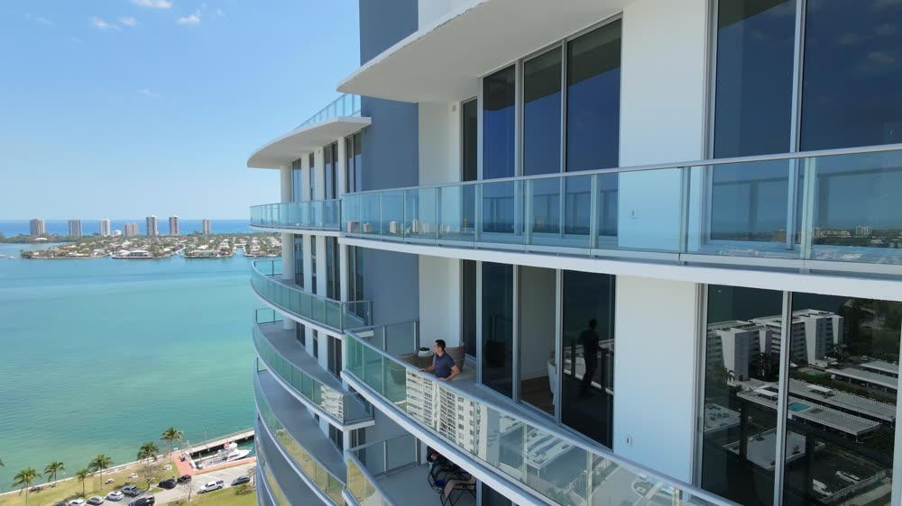
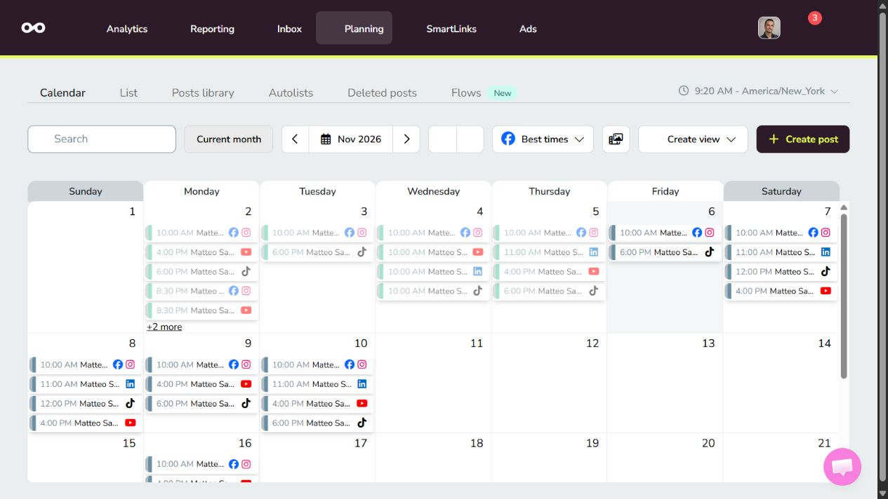

Dal tentativo alla frase completa.
Dopo: il take completo selezionato, senza la ripetizione e la pausa del tentativo precedente.
Trasformo il tuo girato in video pronti per i social. Montaggio semi-automatizzato con Python e AI, cura editoriale e programmazione tramite API: un metodo per pubblicare con più continuità.
Dal tuo materiale · Contenuti EN / ES · Più canali social

Confronto reale ed estratti riproducibili dai lavori di Matteo. Attiva l’audio per ascoltare la voce e il mix.
Dopo: il take completo selezionato, senza la ripetizione e la pausa del tentativo precedente.
La stessa frase con Bebas Neue, parola attiva e passaggio in prospettiva dietro e davanti alla persona.
Estratto dal walkthrough finale di 50 secondi: selezione, ritmo, testi, musica e chiusura con contatti.
Confronto reale di selezione del take, a velocità naturale. La prova dei sottotitoli dura circa 4,5 secondi. Anteprime compresse per una riproduzione leggera.
Dal girato di circa 24 minuti a un long-form completo, con take selezionati, capitoli, domande audio, grafiche e sottotitoli. Poi, cinque argomenti trasformati in Shorts autonomi.
Video completo di circa 14 minuti, con lavorazione editoriale e grafica.
Adattamento verticale, sottotitoli, cover e chiusure dedicate.
Cinque video distribuiti su cinque reti social, con copy e impostazioni dedicate.
Automatizzo le lavorazioni ricorrenti: catalogazione, trasformazioni, render e preparazione dei pacchetti. Seguo la scelta narrativa, il ritmo e la revisione del risultato.
Registro sorgenti, intervalli e ordine dei tagli. Python orchestra FFmpeg per generare il montaggio e riutilizzare le parti invariate nelle revisioni.
Media, caption, cover e impostazioni per rete vengono preparati e programmati tramite API e connettori Metricool.

Dopo il salvataggio verifico rete, data, fuso, media e stato del post. La pubblicazione effettiva viene distinta dalla semplice presenza in calendario.
Il preventivo dipende dal materiale, dalle lavorazioni e dalla frequenza. Il perimetro viene concordato prima di iniziare.
Un Reel, un walkthrough, un’intervista o un pacchetto di estratti da un video lungo.
Un flusso periodico che collega idee, produzione dei contenuti e distribuzione sui tuoi canali.
Numero di contenuti, tempi, revisioni e piattaforme vengono definiti nel brief. Ogni collaborazione parte dai tuoi obiettivi e dal girato disponibile.
Mi occupo di produzione di contenuti e automazione dei flussi di montaggio. Unisco lavoro editoriale, strumenti AI e procedure in Python per trasformare il materiale in un sistema di contenuti riutilizzabili.
Dai video e dalle foto che registri, dal tuo logo e dalle informazioni da comunicare. Condividiamo il materiale su Drive, definiamo il brief, rivediamo le anteprime e prepariamo la consegna.
Sì. Il primo passaggio è verificare il materiale disponibile e capire quali contenuti può sostenere. Se occorrono nuove registrazioni, possiamo preparare gli script e una guida a cosa riprendere.
Le operazioni ripetitive vengono eseguite dagli strumenti; selezione narrativa e revisione restano curate. Controllo tagli, leggibilità, audio, sincronizzazione e coerenza con il brief.
Il pacchetto concordato: video finali, cover, sottotitoli e testi quando previsti, caption e indicazioni di pubblicazione. Le consegne sono organizzate per contenuto e versione.
Nei lavori di Matteo sono stati usati Facebook, Instagram, TikTok, LinkedIn e YouTube. Per il tuo progetto definiamo reti, formati e accessi compatibili con gli account collegati.
Valutando quantità e qualità del materiale, numero di contenuti, formati, grafiche, revisioni e distribuzione richiesta. Questi elementi vengono chiariti prima della produzione.
Dimmi che materiale hai e dove vuoi pubblicare. Da lì definiamo un progetto o un flusso continuativo.
Il pulsante prepara un messaggio: puoi rileggerlo e inviarlo da WhatsApp.